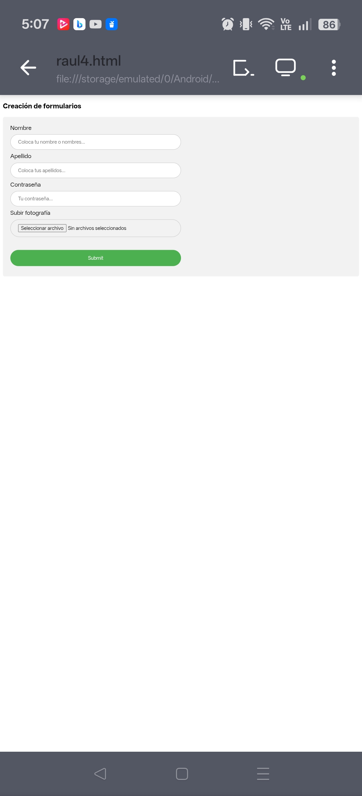

Creación de Formularios con Estilos CSS
En esta práctica se desarrolla un formulario de registro utilizando HTML y CSS. El objetivo es combinar la estructura del formulario con un diseño visual moderno que facilite la captura de información por parte del usuario.
Además de crear los diferentes campos del formulario, se aplican estilos mediante CSS para mejorar la apariencia de los controles, utilizando colores, bordes redondeados, espacios internos y efectos visuales que hacen más agradable la interacción con la página.
El formulario se crea mediante la etiqueta <form>, utilizando los atributos action, method y enctype para permitir el envío de información y la carga de archivos.
Se emplean etiquetas <label> para identificar cada campo y diferentes tipos de <input>, como text, password, file y submit, además del atributo placeholder, que muestra un texto de ayuda mientras el usuario no escribe información.
Las reglas CSS permiten aplicar estilos a todos los controles del formulario mediante selectores específicos.
Se utilizan propiedades como width para definir el ancho de los campos, padding para agregar espacio interno, border-radius para redondear las esquinas y box-sizing para mantener un tamaño uniforme.
También se aplican estilos al botón de envío y el efecto :hover, que cambia su color cuando el usuario coloca el cursor sobre él, mejorando la interacción visual.

La combinación de HTML y CSS permite crear formularios visualmente atractivos y funcionales. Gracias al uso de estilos es posible mejorar la experiencia del usuario, haciendo que los formularios sean más claros, organizados y profesionales, sin afectar la estructura del contenido.